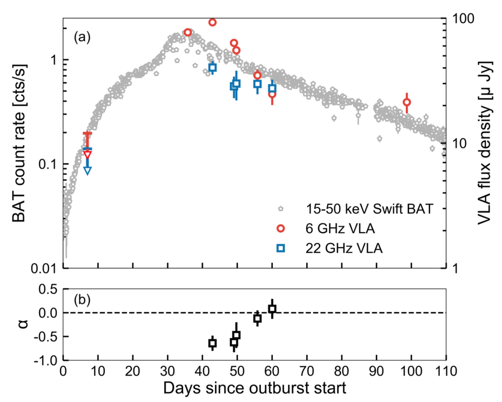
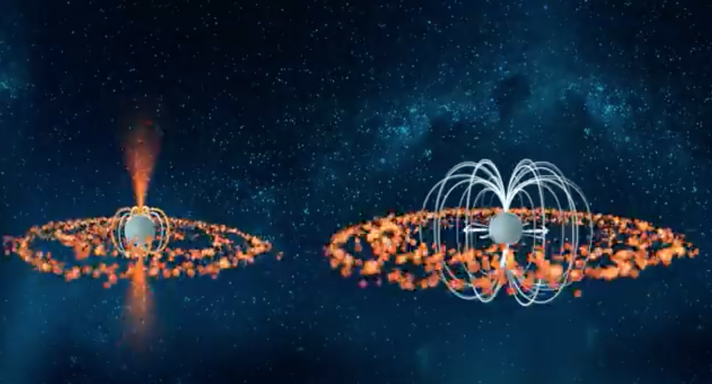

To every action there is a reaction. This simple put powerful principle governs
everythign we observe in the Univers, including the most extreme places such as the
proximities of a neutron star. This old remnant of a dying massive star,
contains all the mass of our Sun in just a 20 km diameter! In ocasions, this neutron star con orbit another
massive star. This proximity will inevitably result in the interaction between them.
A toda acción hay una reacción. Este simple pero poderoso
principio rige todo lo que observamos en el Universo,
incluso cuando nos encontramos en los lugares más extremos
como la proximidad de una estrella de neutrones.
Esta remanente de lo que fue una estrella masiva, ¡contiene la
masa del Sol en sólo un diámetro de 20 kilómetros! En ocasiones,
esta estrella de neutrones orbita alrededor de otra estrella más masiva. Esta proximidad inevitablemente resulta en la interacción entre ellas, donde material es atrapado por la estrella de neutrones. La acumulación de tanto material lleva a eventos explosivos altamente energéticos; estos sistemas son conocidos como binarias de rayos-X.
Swift J0243+6124
On the 29 September 2017, a new X-ray binary was discovered by the MAXI monitor, onboard the International Space Station. This system, now known as Swift J0243+6124, was obseverd to pulse in X-rays every 9 seconds, thus confirming a neutron star - pulsar - orbiting a more masive star. Every time the neutron star approahes close to its companion star, the pulsar captures some of the material. Eventually, this material reaches a threshold and rapidly moves towards the neutron star causing the observed outburst by the X-ray telescopes.
Our team at the University of Amsterdam carried out follow-up observations both in radio and X-rays throughout the outburst, lead by the PhD student
Jakob van den Eijnden
We used one of the most powerfull radio telescopes in the world, the Very Large Array (VLA) in Nuevo Mexico, USA and the X-ray space telescope Swift Neil Geherls X-ray Satelite. All of our observations are summarised in the following graph. The red and blue colours trace the energy radiate at two different radio frequencies while the grey markers show the X-ray energy.

a) Light curve of Swift J0243+6124 in X-rays (grey) and radio (red and blue). b) The evolution of the radio jet where alpha=0 is consistent with the existence of the jet. Credit: van den Eijnden et al. 2018, Nature.
These type of light curves allow us to study the evolution of the energy radiatated by the system. After an initial radio non-detection, to our suprise, we were able to detect it at the maximum of the outburst - a month after its discovery!
Not only that, the properties of the radio emission were consistent with the formation of a jet - highly collimated particles travelling at very high speeds - which carried on for the rest of the outburst. This fact alone is the most novel part of our discovery.
For decades, the existance of these jets in highly magnetised neutron stars were thought to be impossible. In order for the jet to form a jet, material is required to reach very close to the surface of the neutron star. However, the high magnetic field of the neutron star acts as a barrier to the material and prevents it from tapping into the gravitational energy of the star. Thus, it prevents the formation of jets. This idea was supported not only by theory but also by past observational experiments in similar systems.

The strong magnetic field of some neutron stars (right) should prevent the formation of jets. Credit: ICRAR/University of Amsterdam
Y ahora que sigue?
The radio detection of this system opens a new field of study regarding the formation of jets in extreme environments with high magnetic fields. In addition, it confirms than jets can launched independently of the conditions of the host compact object. Further studies will allow us to test if SwJ023 is a unique source or a good example of the overall Galactic population.
One of the long-term goals of studying systems like SwJ0123 is to unravel properties of the enigmatic ultra-luminous X-ray sources (ULXs). Many of them are believed to be neutrons stars that are accreting continuously huge amounts of matter similar to SwJ0123 only at the maximum of its ourburst (which lasted in total a few weeks). Given that these ULXs are found in far away galaxies, discovering and studying more of these analogue systems in the Milky Way will allow us to solve this cosmic mystery.
Explicación sobre el jet imposible (en inglés solamente). Crédito: ICRAR/Universidad de Amsterdam